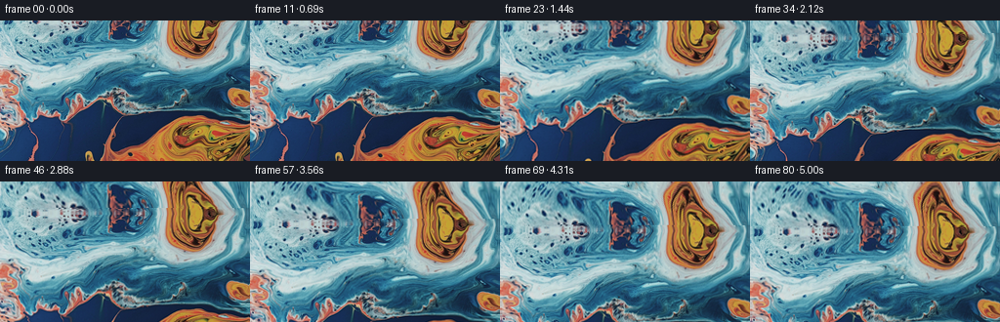
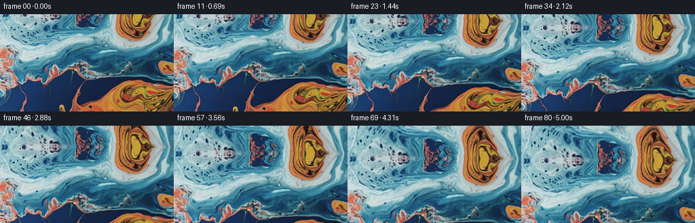
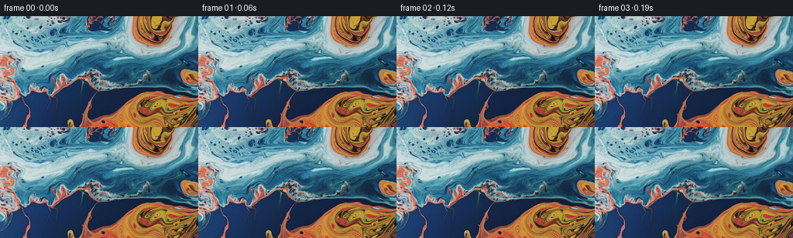
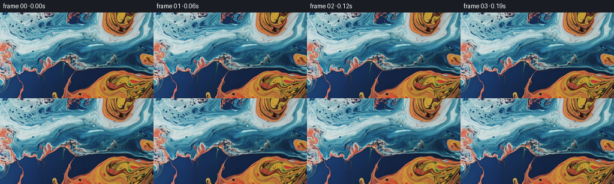

← 本轮 smoke 总览traex/GPT-5.6-Sol · 0003_s2
vision-agent · 256×144 · 16.0 FPS · 81 帧 · 状态 complete · 输出 tokens 7975
原始任务a close up of a blue and orange liquid, camera tilts up
当前保存结果
已保存候选与代码修改
这里按时间展示外部捕获的候选，每份均可单独播放。保存新版本不等于完成视觉检查；下方工具证据记录实际看过的图。
候选 01 · 2026-11-09T02:10:43.457265+00:00 · 点开播放与检查图
inspection.png

transition_check.png

代码变化
--- 上一保存版本
+++ 本次保存版本
@@ -0,0 +1,134 @@
+"""Generate a slow upward camera tilt across the supplied marbled liquid.
+
+The shot is made from the source pixels only. A smoothly warped reflection of
+the upper portion supplies off-frame texture, while a very low-amplitude flow
+field keeps the liquid from looking like a rigid printed card.
+"""
+
+from pathlib import Path
+
+import cv2
+import numpy as np
+from PIL import Image
+
+import artifact_io
+
+
+def smootherstep(x: np.ndarray | float) -> np.ndarray | float:
+ """C2-continuous ease in/out, useful for a deliberate camera move."""
+ return x * x * x * (x * (x * 6.0 - 15.0) + 10.0)
+
+
+def make_upper_extension(source: np.ndarray, extra: int) -> np.ndarray:
+ """Continue the top edge with a gently de-regularized reflected texture.
+
+ Reflection preserves exact colors and structures at the boundary. The
+ depth-dependent horizontal meander and vertical compression prevent the
+ new area from reading as a simple mirror copy.
+ """
+ h, w = source.shape[:2]
+ yy, xx = np.mgrid[0:extra, 0:w].astype(np.float32)
+ depth = (extra - yy).astype(np.float32) # zero lies at the original edge
+ fade = 1.0 - np.exp(-depth / 9.0)
+
+ # Stay within the pale/cyan upper half of the source so the extension is
+ # chromatically consistent with the edge it continues.
+ sample_y = (
+ 0.72 * depth
+ + fade * (3.0 * np.sin(xx / 31.0 + depth / 16.0))
+ + fade * (1.4 * np.sin(xx / 9.5 - depth / 21.0))
+ )
+ sample_x = (
+ xx
+ + fade * (0.20 * depth)
+ + fade * (5.0 * np.sin(xx / 37.0 + depth / 18.0))
+ + fade * (1.8 * np.sin(xx / 12.5 - depth / 11.0))
+ )
+ sample_y = np.clip(sample_y, 0.0, min(70.0, h - 1.0)).astype(np.float32)
+ sample_x = sample_x.astype(np.float32)
+
+ upper = cv2.remap(
+ source,
+ sample_x,
+ sample_y,
+ interpolation=cv2.INTER_CUBIC,
+ borderMode=cv2.BORDER_REFLECT_101,
+ )
+
+ # Match the first few rows particularly closely to suppress any visible
+ # join as the original top edge travels down through the shot.
+ for row in range(extra - 6, extra):
+ d = extra - row
+ alpha = d / 6.0
+ edge_sample = source[min(d, h - 1)]
+ upper[row] = np.clip(
+ (1.0 - alpha) * source[0].astype(np.float32)
+ + alpha * edge_sample.astype(np.float32),
+ 0,
+ 255,
+ ).astype(np.uint8)
+ return upper
+
+
+def generate() -> np.ndarray:
+ case_dir = Path(__file__).resolve().parent
+ source = np.asarray(Image.open(case_dir / "first_frame.png").convert("RGB"))
+ h, w = source.shape[:2]
+ frame_count = 81
+
+ extra = 88
+ upper = make_upper_extension(source, extra)
+ canvas = np.concatenate([upper, source], axis=0)
+
+ y, x = np.mgrid[0:h, 0:w].astype(np.float32)
+ frames = np.empty((frame_count, h, w, 3), dtype=np.uint8)
+
+ # Static spatial phases for a coherent, non-random viscous drift.
+ phase_a = x / 42.0 + y / 68.0
+ phase_b = x / 91.0 - y / 31.0
+ phase_c = x / 25.0 + y / 83.0
+
+ for index in range(frame_count):
+ t = index / (frame_count - 1)
+ ease = float(smootherstep(t))
+
+ # An upward tilt makes image content travel downward. Fifty-two pixels
+ # over five seconds is evident but still calm enough for this close-up.
+ rise = 52.0 * ease
+
+ # Difference-of-sines starts at exactly zero and evolves smoothly. Its
+ # sub-two-pixel amplitude suggests slow liquid motion without competing
+ # with the requested camera movement.
+ dx = (
+ 1.15 * (np.sin(phase_a + 0.92 * ease) - np.sin(phase_a))
+ + 0.45 * (np.sin(phase_b - 0.66 * ease) - np.sin(phase_b))
+ )
+ dy = (
+ 0.72 * (np.sin(phase_b + 0.74 * ease) - np.sin(phase_b))
+ + 0.30 * (np.sin(phase_c - 0.52 * ease) - np.sin(phase_c))
+ )
+
+ # A tiny horizontal parallax arc makes the operation read as a camera
+ # tilt rather than a perfectly mechanical vertical slide.
+ camera_x = 1.4 * np.sin(np.pi * ease)
+ map_x = (x + camera_x + dx).astype(np.float32)
+ map_y = (y + extra - rise + dy).astype(np.float32)
+
+ frames[index] = cv2.remap(
+ canvas,
+ map_x,
+ map_y,
+ interpolation=cv2.INTER_CUBIC,
+ borderMode=cv2.BORDER_REFLECT_101,
+ )
+
+ # The benchmark requires exact source identity, not merely a visually
+ # equivalent integer-coordinate resampling.
+ frames[0] = source
+ return frames
+
+
+if __name__ == "__main__":
+ root = Path(__file__).resolve().parent
+ artifact_io.save(generate(), root)
+
候选 02 · 2026-11-09T02:11:59.566049+00:00 · 点开播放与检查图
inspection.png

transition_check.png

代码变化
--- 上一保存版本
+++ 本次保存版本
@@ -14,9 +14,9 @@
import artifact_io
-def smootherstep(x: np.ndarray | float) -> np.ndarray | float:
- """C2-continuous ease in/out, useful for a deliberate camera move."""
- return x * x * x * (x * (x * 6.0 - 15.0) + 10.0)
+def smoothstep(x: np.ndarray | float) -> np.ndarray | float:
+ """Gentle ease in/out that still produces visible early-frame motion."""
+ return x * x * (3.0 - 2.0 * x)
def make_upper_extension(source: np.ndarray, extra: int) -> np.ndarray:
@@ -38,11 +38,11 @@
+ fade * (3.0 * np.sin(xx / 31.0 + depth / 16.0))
+ fade * (1.4 * np.sin(xx / 9.5 - depth / 21.0))
)
- sample_x = (
- xx
- + fade * (0.20 * depth)
- + fade * (5.0 * np.sin(xx / 37.0 + depth / 18.0))
- + fade * (1.8 * np.sin(xx / 12.5 - depth / 11.0))
+ edge_taper = np.sin(np.pi * xx / (w - 1.0))
+ sample_x = xx + edge_taper * (
+ fade * (0.14 * depth)
+ + fade * (4.2 * np.sin(xx / 37.0 + depth / 18.0))
+ + fade * (1.5 * np.sin(xx / 12.5 - depth / 11.0))
)
sample_y = np.clip(sample_y, 0.0, min(70.0, h - 1.0)).astype(np.float32)
sample_x = sample_x.astype(np.float32)
@@ -90,7 +90,7 @@
for index in range(frame_count):
t = index / (frame_count - 1)
- ease = float(smootherstep(t))
+ ease = float(smoothstep(t))
# An upward tilt makes image content travel downward. Fifty-two pixels
# over five seconds is evident but still calm enough for this close-up.
候选 03 · 2026-11-09T02:12:04.892752+00:00 · 点开播放与检查图
inspection.png

transition_check.png

代码变化
代码未变化；重新保存了产物。
可观测工具行为
命令 1 · 2026-11-09T02:09:22.675326+00:00/bin/bash -lc 'cat GENERATION_RULES.md'
exit 0 命令 2 · 2026-11-09T02:09:22.939348+00:00/bin/bash -lc "cat prompt.txt && printf '\\n---FILES---\\n' && find . -maxdepth 2 -type f -printf '%p\\n' | sort"
exit 0 命令 3 · 2026-11-09T02:09:23.399511+00:00/bin/bash -lc "python3 - <<'PY'
from PIL import Image
im=Image.open('first_frame.png')
print(im.mode, im.size)
PY
ffmpeg -version | head -3"exit 0 命令 4 · 2026-11-09T02:09:35.722964+00:00/bin/bash -lc "cat task_spec.json && sed -n '1,240p' artifact_io.py"
exit 0 命令 5 · 2026-11-09T02:09:36.629315+00:00/bin/bash -lc "python3 - <<'PY'
mods=['numpy','PIL','cv2','scipy','imageio','skimage']
for m in mods:
try:
x=__import__(m); print(m, getattr(x,'__version__','ok'))
except Exception as e: print(m,'NO',e)
PY"
exit 0 命令 6 · 2026-11-09T02:10:38.996748+00:00/bin/bash -lc 'python3 generate.py'
exit 0 命令 7 · 2026-11-09T02:10:50.986976+00:00/bin/bash -lc "python3 - <<'PY'
import numpy as np
from PIL import Image
z=np.load('pixels.npz')['pixels']
frames=np.stack([((z>>(8*s))&255) for s in (2,1,0)],-1).transpose(2,0,1,3).astype('uint8')
src=np.asarray(Image.open('first_frame.png').convert('RGB'))
print('shape/dtype',frames.shape,frames.dtype)
print('frame0 maxdiff',np.abs(frames[0].astype(int)-src.astype(int)).max(),'equal',np.array_equal(frames[0],src))
for i in [1,2,10,20,40,60,80]:
d=np.abs(frames[i].astype(float)-frames[i-1].astype(float))
print(i,'prev MAE',round(d.mean(),3),'changed',round(np.mean(d.max(2)>0),3),'meanRGB',np.round(frames[i].mean((0,1)),1))
PY
printf '\\noutputs:\\n'; du -h pixels.npz index.html inspection.png; find frames -type f | wc -l"exit 0 命令 8 · 2026-11-09T02:11:57.963338+00:00/bin/bash -lc "python3 generate.py && python3 - <<'PY'
import numpy as np
from PIL import Image
src=np.asarray(Image.open('first_frame.png').convert('RGB'))
fs=np.stack([np.asarray(Image.open(f'frames/{i:02}.png')) for i in range(81)])
assert fs.shape==(81,144,256,3) and fs.dtype==np.uint8
assert np.array_equal(fs[0],src)
print('validated',fs.shape,fs.dtype,'first_exact=',np.array_equal(fs[0],src))
for i in [1,2,3,10,20,40,60,80]:
d=np.abs(fs[i].astype(np.int16)-fs[i-1].astype(np.int16))
print(f'{i:02}: mae={d.mean():.3f}, changed={np.mean(np.any(d,axis=2)):.3f}')
PY"exit 0 命令 9 · 2026-11-09T02:12:14.480211+00:00/bin/bash -lc "python3 - <<'PY'
from PIL import Image,ImageDraw
import numpy as np
ids=[0,8,16,24,32,40,48,56,64,72,80]
ims=[Image.open(f'frames/{i:02}.png') for i in ids]
w,h=ims[0].size
out=Image.new('RGB',(w*4,(h+18)*3),(20,20,20)); d=ImageDraw.Draw(out)
for j,(i,im) in enumerate(zip(ids,ims)):
x=(j%4)*w;y=(j//4)*(h+18)
d.text((x+3,y+2),f'{i/16:.2f}s',fill='white');out.paste(im,(x,y+18))
out.save('validation_contact.png')
# package-level checks
z=np.load('pixels.npz')['pixels']
print('npz pixels',z.shape,z.dtype,'min/max',z.min(),z.max())
print('html bytes',__import__('pathlib').Path('index.html').stat().st_size)
PY"exit 0 视觉工具实际返回图片 1

视觉工具实际返回图片 2

视觉工具实际返回图片 3

保存候选 3 份；完成命令 9 次；可验证图片返回 3 张。原始 API 响应与完整日志保留在本地。